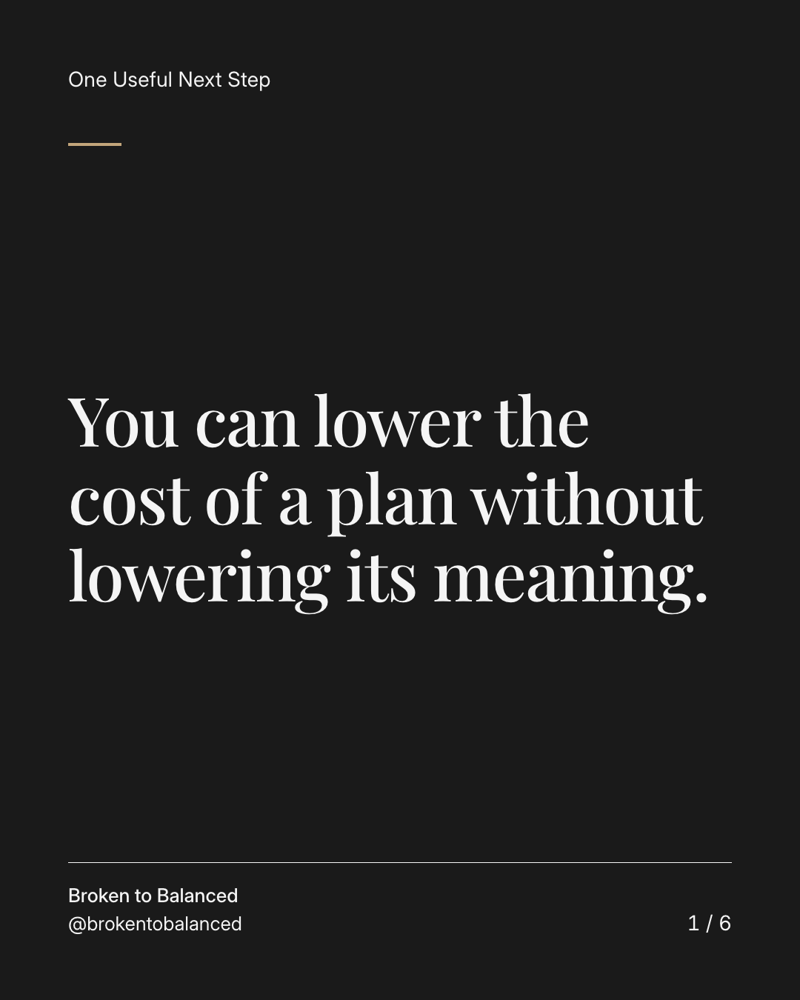
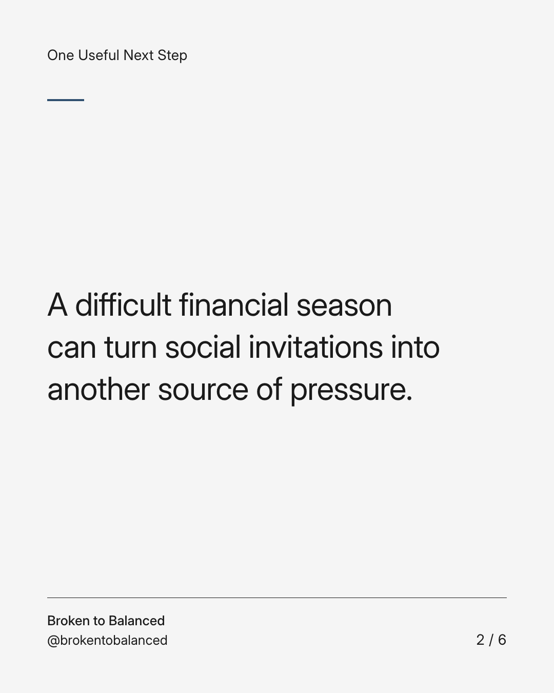
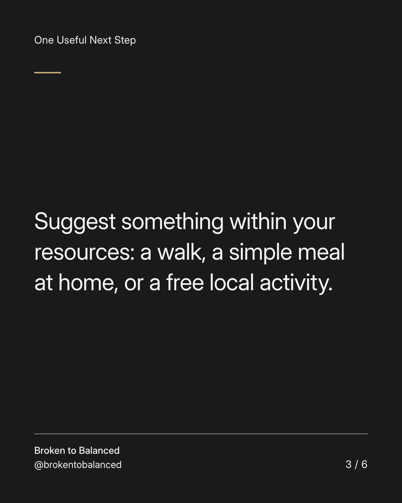
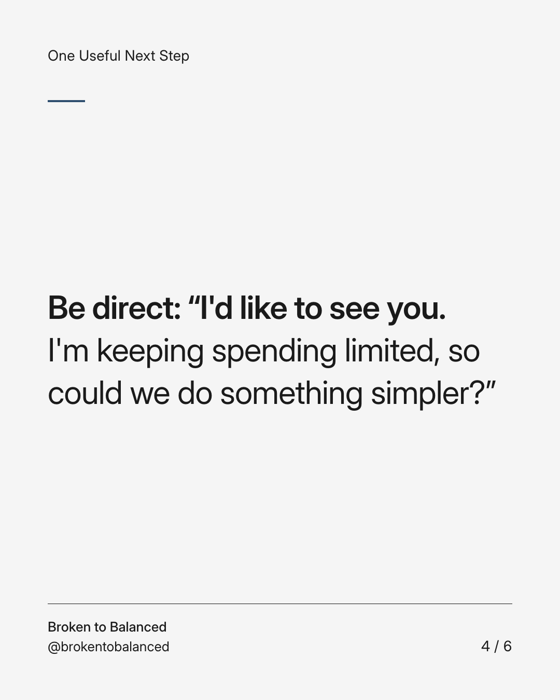
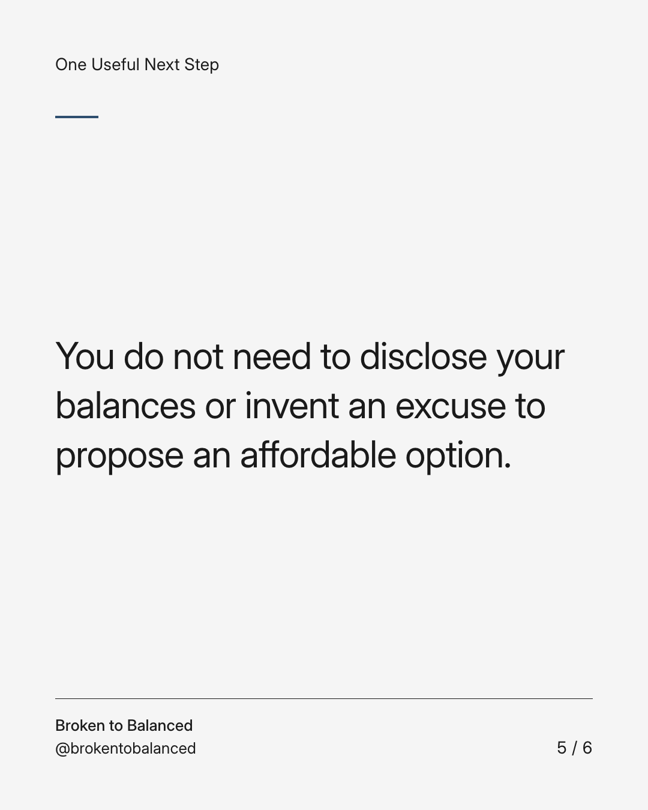
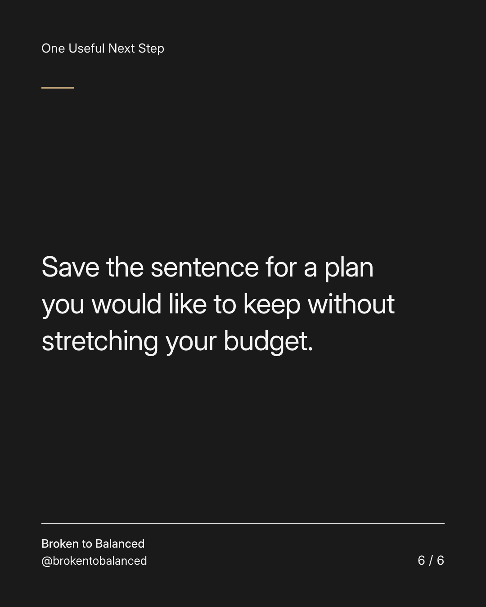

Exact text and accessibility text
You can lower the cost of a plan without lowering its meaning.
Slide 1 of 6. You can lower the cost of a plan without lowering its meaning.


Exact text and accessibility text
A difficult financial season can turn social invitations into another source of pressure.
Slide 2 of 6. A difficult financial season can turn social invitations into another source of pressure.


Exact text and accessibility text
Suggest something within your resources: a walk, a simple meal at home, or a free local activity.
Slide 3 of 6. Suggest something within your resources: a walk, a simple meal at home, or a free local activity.


Exact text and accessibility text
Be direct: “I'd like to see you. I'm keeping spending limited, so could we do something simpler?”
Slide 4 of 6. Be direct: “I'd like to see you. I'm keeping spending limited, so could we do something simpler?”


Exact text and accessibility text
You do not need to disclose your balances or invent an excuse to propose an affordable option.
Slide 5 of 6. You do not need to disclose your balances or invent an excuse to propose an affordable option.


Exact text and accessibility text
Save the sentence for a plan you would like to keep without stretching your budget.
Slide 6 of 6. Save the sentence for a plan you would like to keep without stretching your budget.
Exact caption
Plain-text fallback: select and copy the caption.